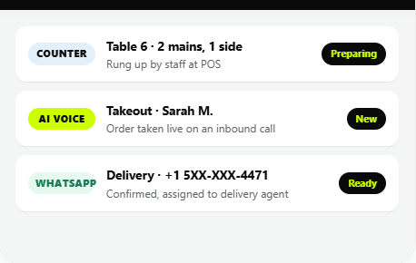

ChatCart Pro
Most small restaurants and grocery stores in the UAE and India don't have the margin or the technical team to run a custom ordering app. ChatCart Pro meets customers where they already are — WhatsApp — and gives the business an AI chatbot, a voice agent, and a POS-synced inventory, all in one product.
The challenge
Restaurants and grocery stores lose orders every time a phone line is busy, a customer doesn't want to install another app, or a message sent to the business never gets a reply. Underneath that, most of these businesses run on nothing more structured than a printed menu, a notebook, and whoever's free to pick up the phone — stock and availability live in someone's head, not in a system.
I wanted to build something that didn't ask small business owners to change how their customers already behave — people already message businesses on WhatsApp — while still solving the real operational problems: keeping the AI honestly grounded in what the business actually sells, handling the messy edge cases a real order always has (half portions, "no onions," closed-but-still-taking-preorders), and getting a confirmed order onto a kitchen ticket without a staff member re-typing it.
Research & who I built this for
ChatCart Pro grew out of two real deployments, not a generic spec: a grocery store in Tamil Nadu, India, and Fine Dine Family Restaurant, a UAE restaurant whose full menu — roughly 335 dishes across 31 categories — I had transcribed from their actual printed menu into the ordering system. Building against a real restaurant's real menu, not a demo dataset, is where most of the genuinely hard edge cases came from: dishes sold in Half or Full portions that need disambiguating, drinks that take a sweetness preference and plain infusions that don't, and the gap between what a kitchen can promise and what an AI agent is tempted to promise on its behalf.
The clearest finding from working directly with that menu: a blanket rule like "ask every hot beverage how sweet they want it" breaks the moment the category isn't uniform. Würth-style component systems taught me to look for that kind of false consistency — "Hot Beverages" on this menu mixes milk teas (Karak, which genuinely needs a sweetness and brew-strength question) with plain infusions like Green Tea and Sulaimani, which don't take milk and shouldn't be asked about brew strength at all. Applying one rule to the whole category produced a nonsensical question on green tea orders.

Conversation design
Below is a real flow from the ChatCart Pro marketing site's live demo, reproduced here as a worked example of the conversation design, not a screenshot (the product page shows it as an interactive WhatsApp mockup):
[View cart] [Pay now]
On the restaurant build specifically, the conversation logic (in a module I call ordering_knowledge.py rather than a generic prompt dump) carries clarifying-question guidance per item or category — so a Shawarma order gets asked "spicy or normal," a Charcoal Special gets a short list of the 2–3 relevant varieties pulled from the live menu, and a plain Green Tea gets asked about sugar only, never brew strength. It's deliberately a small, explicit, human-editable rule set rather than a vector-search/RAG layer: with roughly 30 menu categories and a fixed rule set, RAG would have been solving a retrieval problem the menu doesn't actually have, at the cost of being much harder to debug and edit by hand when the restaurant changes something. The rules only ever tell the AI what to ask — menu items, prices and availability still only ever come from the real catalogue data, which is what stops the AI from inventing a dish or a price that doesn't exist.
Edge cases
The parts of an ordering agent that actually take the engineering time aren't the happy path — they're these:
- Out of stock mid-order: every dish carries a live in-stock flag editable from the admin Menu page (with search and a per-item on/off switch); the moment a staff member flips an item off, the AI stops offering it as available in the very next reply, with no deploy or restart needed.
- A misheard or ambiguous voice order: the voice path runs through Groq Whisper for transcription, then the same grounded ordering logic as text — so a misheard item name still has to match something in the real catalogue to be added; it can't silently invent a dish that sounds similar.
- Tamil and English, mixed: the ChatCart Pro platform auto-detects the customer's language and replies in it, built to handle 30+ languages rather than assuming English; on the restaurant deployment specifically, the base menu and conversation are English/Arabic-oriented, with language auto-detection as the layer that extends this further, so I'd flag that as the honest boundary of what I've verified working end-to-end versus what the wider platform is built to support.
- When the AI hands off to a person: "smooth human handoff" routes complex requests to the business's team instantly with full chat context attached, rather than leaving the customer stuck with a bot that's out of its depth.
- The business is closed: rather than refusing the order, the restaurant agent takes it as a pre-order through the normal flow (items → delivery/pickup → address → confirm) and tells the customer once, plainly, when it'll actually be prepared.
- Guarding against the AI lying about order status: I added an explicit filter that catches the AI claiming an order is confirmed in free text, and replaces it with the one phrasing that's actually true — itemised total, "reply CONFIRM to place it" — because a fluent LLM will sometimes produce a confident-sounding false positive, and an ordering agent cannot be allowed to tell a customer their order is placed when it isn't.
The detail I'm proudest of: no staff touches a confirmed order
Once a customer replies CONFIRM — the only way an order is actually placed, never automatically, regardless of whether it started as text, a voice note, or a photo of a dish — a small print agent on the restaurant's own PC polls for newly confirmed orders every 10 seconds and sends each one to the kitchen printer exactly once, automatically. No one at the till re-types the WhatsApp order onto a ticket. It shares the same Windows print queue as the restaurant's existing KOT software when there is one, specifically because running two separate direct connections to one physical printer causes real, confirmed conflicts — a constraint I only found by building against an actual restaurant PC, not a spec sheet.
Delivery orders get a second layer: once confirmed, the first active delivery agent is notified on WhatsApp with the full order and a map link, and drives it through PACKED → PICKED → DELIVERED by replying with those exact words — each update pushes live to the dashboard and triggers an automatic "it's on its way" / "enjoy your meal" message to the customer, with no dispatcher in the loop for a one- or two-rider operation.
What I built
A WhatsApp-native commerce platform with POS-synced stock, an AI voice ordering option, and a delivery workflow that runs itself.
- WhatsApp Cloud API integration for in-chat ordering by text, voice note or photo — no app install required
- Real-time stock sync via a per-item in-stock switch, so a sold-out dish stops being offered the moment staff flip it off
- Groq Whisper voice transcription feeding the same grounded, catalogue-only ordering logic as text orders
- An explicit, editable clarifying-question rule set per item/category, chosen over RAG for a menu this size — and a guard against the AI ever falsely claiming an order is confirmed
- Auto-print to the kitchen on confirmation, with zero staff re-entry, built to coexist with existing KOT printer software
- A WhatsApp-driven delivery-agent workflow (PACKED → PICKED → DELIVERED) with automatic customer status messages
- An AI voice calling agent and a white-label website chatbot built on the same ordering core, for customers who'd rather call or browse the business's own site
Outcome
ChatCart Pro is live with a pilot supermarket in Tamil Nadu, India, and the restaurant build is live for Fine Dine Family Restaurant in the UAE, running against that restaurant's real ~335-item menu with the auto-print and delivery-agent workflow in production.
I don't have a formal, audited count yet of exactly what share of orders need zero human involvement end-to-end — that's a real gap in my own measurement, not a number I want to round up to sound more finished than it is. What I can say precisely: every order still requires an explicit customer CONFIRM, every item in every order is checked against the real catalogue before it's added, and the print and delivery-status workflows run with no staff re-entry once an order is confirmed.
What I'd change
The honest list: date and quantity extraction from free text is currently a lightweight regex pass, not a robust parser, and it's the most pronounced limitation on the restaurant build given how many dishes need a Half/Full size decision — I'd invest in a proper structured-extraction step next. I'd also build real dispatch/load-balancing for delivery agents instead of always assigning the first active one, which only holds up for a one- or two-rider operation. And I'd formally measure the no-human-involved order percentage instead of estimating it, because that's exactly the number a buyer or employer is going to ask for first.